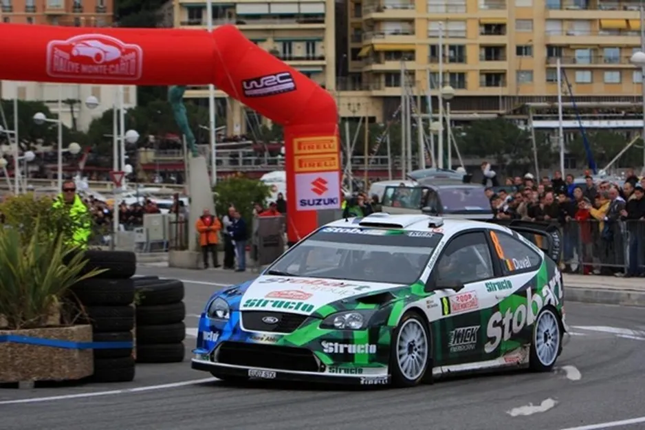
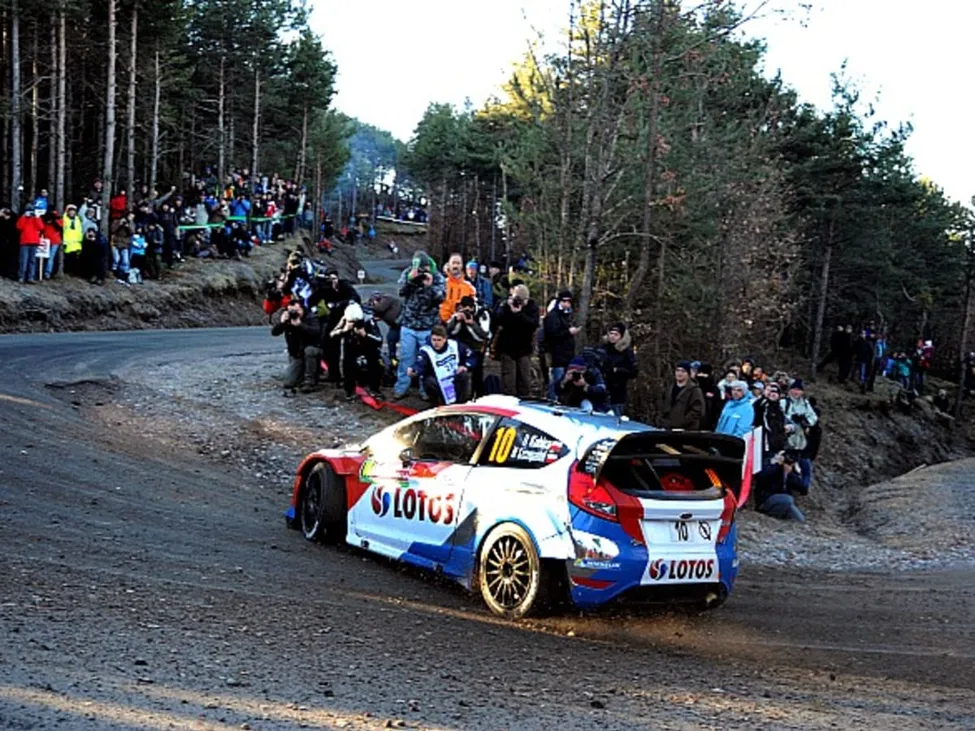
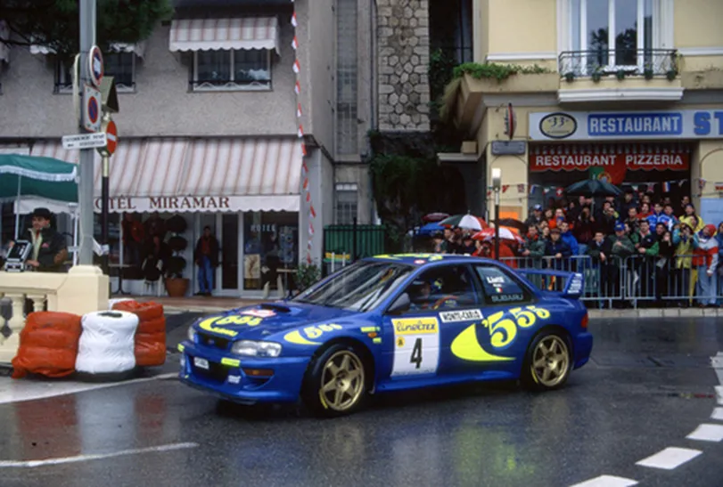
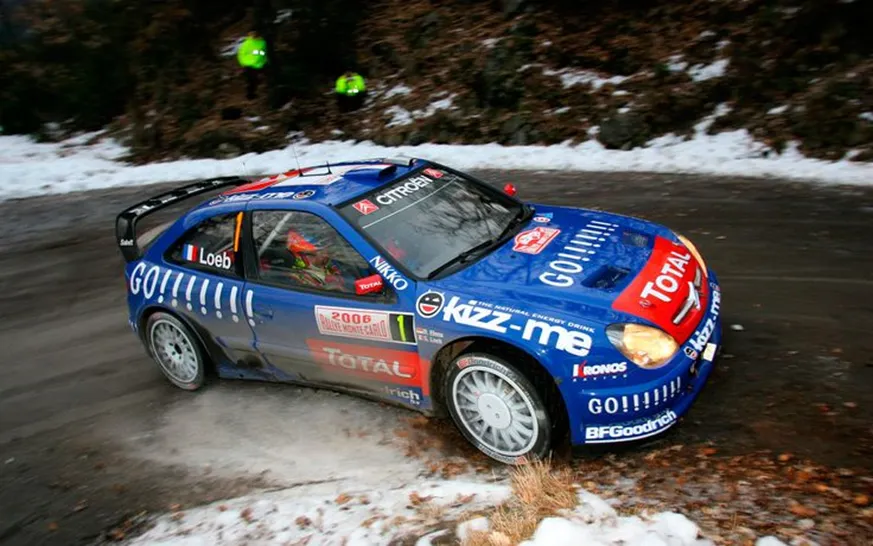
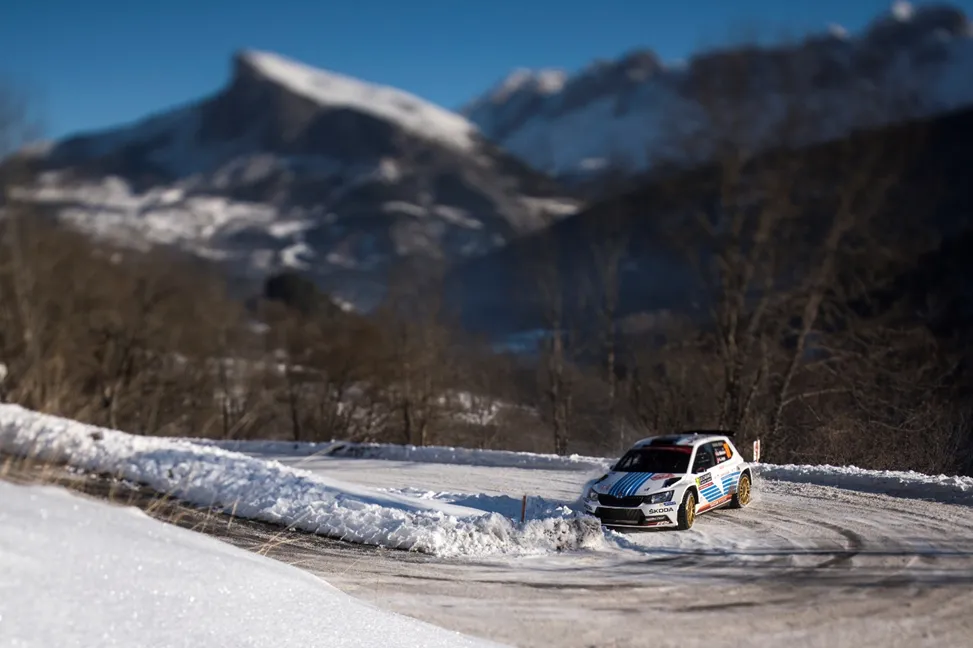

5 Rally Monte Carlo Moments you Forgot!
The start of the 2024 season is upon us! Is everyone as excited as I am? I hope so! Rally Monte Carlo is the traditional start of the WRC season, and it’s given us countless moments to remember. So many, that we forget some wink wink. So that’s why I am here, to give you a list of 5 Rally Monte Carlo moments that you’ve probably forgotten about! Without further ado, let’s get into the list!
2008 – Atkinson vs Duval in the Monaco Circuit

Picture from Motorsport.com
For 2007 and 2008, the Rally Monte Carlo organizers held an SSS at the Monaco circuit, which was quite cool to see! In 2008, the spectator stage was the last stage of the rally, and it was quite eventful. In the principality super special, there would be a battle between Subaru’s Chris Atkinson and Stobart Ford’s Francois Duval for the last podium place. The pair were separated by 20s heading to Sunday. On Sunday, the rally moved away from Valence and back to the classic stages around Col De Turini. Duval was more familiar with those stages and put the hammer down. The Belgian won 3 out of the day’s 4 stages and reduced the gap to just 1.1 seconds heading to the circuit stage! There, the pair would incredibly set an identical time, for 1st place in the stage as well! That meant that Chris Atkinson got his 2nd career podium, and his first on tarmac. Interestingly, Atkinson was also involved in a battle with Mikko Hirvonen for 4th place in 2007, with the Aussie again coming out on top in the circuit stage.
2014 – Robert Kubica shines on his debut

Not many people remember the hype around Robert Kubica at the start of the 2014 season. It had only been 3 years since the former F1 star had his serious accident, and he had recovered, and he seemed rapid. The Pole won the WRC2 title in a DS3 RRC in 2013, and was rumored to be in consideration for a Citroen seat for 2014. Kubica ultimately chose a privateer Ford (crashing twice in Wales 2013 in the DS3 WRC might have also played a role) for a full 2014 season. Expectations among rally fans were high, but no one could have expected what Kubica would do. The Pole won the first stage of the rally 14 seconds ahead of local driver Bryan Bouffier and almost 20 seconds ahead of 2013 World Champ, Sebastien Ogier! He was also on slick tyres, most of the others had opted for a mixed, or full studded set of tyres. Kubica would also win the next stage. Sensationally, on his Monte debut, Kubica was leading the rally, 36.8s ahead of Sebastien Ogier! Sadly, Kubica found out why people opted for winter tyres on the next stage, when there was more snow, and the Pole a minute and a half to Bouffier. Unfortunately for Kubica, his rally would end on the 9th stage of the rally, as he was too fast on a wet corner, went hide and hit a bridge as he was going into the ditch.
1997 – Piero Liatti gets his first and only win

Pic from Girardo and Co. Archive
Rally Monte Carlo in 1997 was a rally of 3 drivers. Tommi Makinen, Carlos Sainz and Piero Liatti. These three kept alternating in the podium positions, in the very tricky conditions. Heading onto the final day, Makinen, was leading Liatti by 24s, with Carlos Sainz a further 3s behind. The first stage of Sunday was the mighty Sisteron stage, all 36km of mixed conditions. Rally leader Makinen chose the wrong tyres, and lost 38s to Liatti in Sisteron alone, and dropped to 3rd. Makinen regained 2nd from Sainz on the next stage, but he spun on the stage after that, losing almost 2 minutes, effectively ending any chance he had at a first Monte Carlo win. After that, it was plain sailing for Liatti, with the Italian getting his first and only win in the WRC, and the first in the “World Rally Car” era.
2006 – Sebastien Loeb’s comeback drive


It was Stage 5 of Rally Monte Carlo, and everything was going well for Sebastien Loeb. The Kronos Citroen driver had already established a lead of over a minute over Marcus Gronholm, and was ready to go to cruise mode. But on Stage 6 which was the final stage of the day, Loeb went off the road! A rare mistake by the Frenchman meant that he would lose 5 minutes (SR time was shorter back then) and consequently drop to 8th. What followed was a fightback for the ages. Loeb won all of Saturday’s stages and went up to 4th place, passing Sarrazin, Duval, Panizzi and Atkinson. On Sunday, Loeb had a gap of 35s separating himself and Toni Gardemeister in 2nd. Loeb first passed Stohl on the first pass of Col De Turini, and then passed Gardemeister for 2nd on the 2nd pass of Col De Turini, the last stage of the rally. Loeb became the first driver to stand on the podium after Super Rallying, something that has happened only once since, when Petter Solberg finished 3rd in Rally Portugal in 2012.
2017 – Mikkelsen’s redemption drive

Picture from the Red Bull Content Pool
Volkswagen’s
shock exit from the WRC at the end of 2016 left Andreas Mikkelsen searching for
a seat. Teammates Seb Ogier and Jari-Matti Latvala found refuge in M-Sport and
Toyota, but the Norwegian wasn’t as lucky. Without a seat for 2017 in place,
Mikkelsen found refuge at Skoda, going back to the team with whom he won the
2011 and 2012 IRC titles. His Monte could have gone two ways. He could either
try and push and go off like his old teammate Ogier did in 2012 when he was in
a Fabia S2000, or he could dominate the class and make one of the 4 teams interested in
his talents. Mikkelsen dominated Monte Carlo in the Fabia R5, winning all but 5
of the rally’s stages. The Norwegian won the WRC2 class by 3 and a half minutes
ahead of teammate Jan Kopecky, and was 7th overall. This was then
followed by another dominant win in Corsica. Mikkelsen was then picked up by
Citroen, and then Hyundai, rescuing his career in the WRC category.
Written by Dimitris Theodorou


Comments